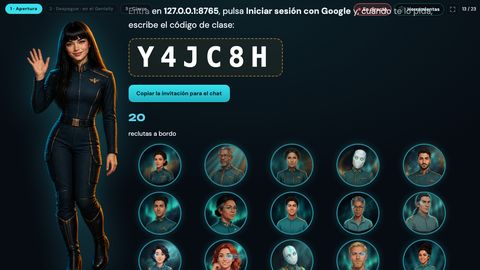
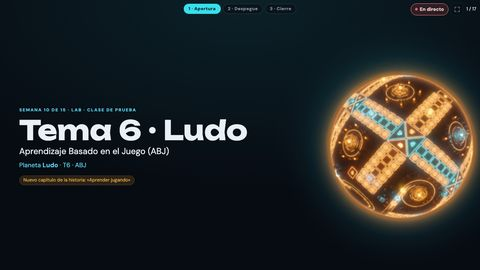
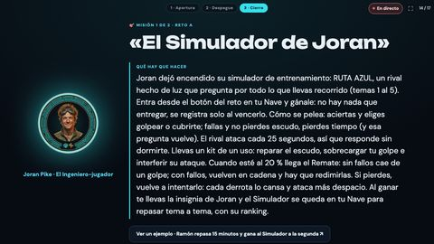
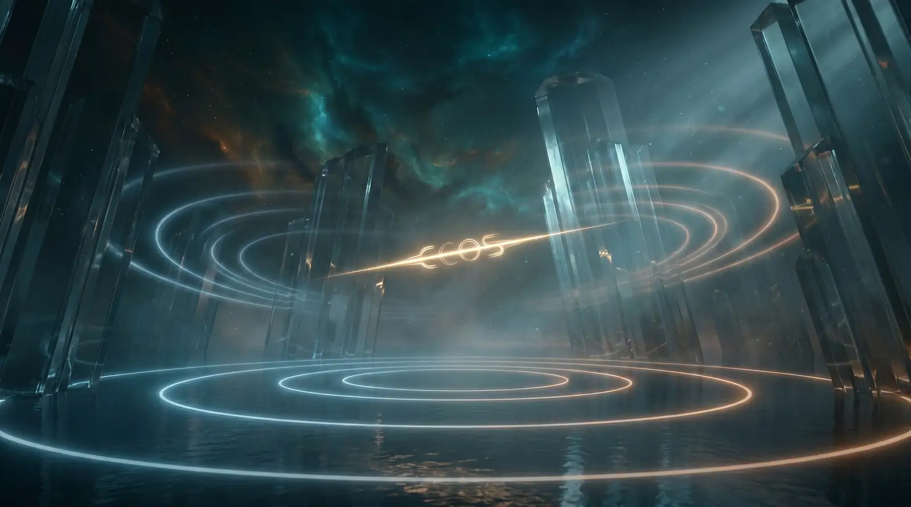
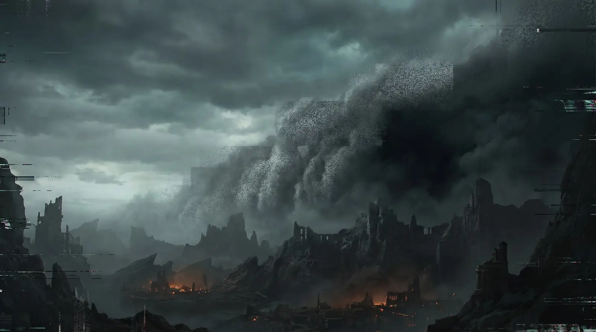
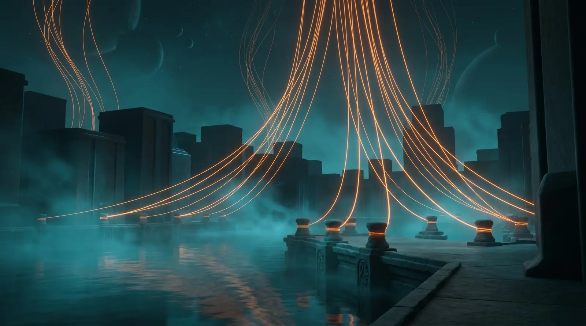
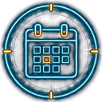

1Invita a tu clase
Un solo enlace para todos tus estudiantes. Se pega en el foro de la plataforma de UNIR.
Tu punto de partida: lo que haces tú, lo que hacen tus estudiantes y el temario, sin la historia.

Un solo enlace para todos tus estudiantes. Se pega en el foro de la plataforma de UNIR.

Cada semana ya está montada: vídeo, retos y cierre. No tienes que preparar nada.

Dos por tema, uno en clase y otro en casa. Lo que cuenta para nota espera tu «sí».
Cada tema de la asignatura es un planeta de la historia, con dos retos prácticos. Las 2 actividades y el examen, como siempre.




Pulsa una pregunta para ver la respuesta y el botón que te lleva.
Uno solo, el mismo para todos tus estudiantes, en clase o en casa: la invitación de tu grupo. Cada estudiante entra con su cuenta de Google y se apunta solo.
 Ver el vídeoTu panel (Mi nave) → portada (Puente), las tres primeras semanas; después, Estudiantes (Reclutas)#
Ver el vídeoTu panel (Mi nave) → portada (Puente), las tres primeras semanas; después, Estudiantes (Reclutas)#Desde el lunes de la semana 1 de tu grupo. Antes están cerrados: lo que se registre no suma.
No. La sesión de cada semana ya está montada, con su vídeo, sus retos y su cierre. Si quieres, échale un vistazo y elige qué diapositivas enseñas.
«Empezar la clase» proyecta la sesión de la semana. Desde ahí pasas lista y ves quién ha hecho cada reto.
Casi siempre es una de tres: el grupo aún no ha empezado; falta el enlace a lo que hizo (casi todos los retos lo piden); o es algo de nota y espera tu visto bueno. Si lo viste hacer, dáselo a mano.
En tus estudiantes, pulsa su fila y, en su ficha, el reto. Arriba en tu panel tiene que estar puesto «Mando manual». Si lo quitas, se le descuenta lo que le dio.
Ninguna nota cambia sola. Lo que pidan tus estudiantes te espera en Cola de nota (solo aparece cuando hay algo). «Conceder» o «Denegar y devolver»: si deniegas, recupera sus créditos.
Dos cosas: XP, que suben su nivel y nunca bajan, y créditos (◈), que gasta en la tienda.
| Reto | XP | ◈ |
|---|---|---|
| En clase (relámpago) | 100 | 20 |
| En casa (reto principal) | 250 | 50 |
| Actividad de la UNIR entregada | 500 | 100 |
Sí, con sus créditos (en STARGATE, el «Arsenal de batalla»): desde la semana 15 (PUA: la 8), con 4 temas completos y una vez cada opción. Ninguna se aplica sin tu visto bueno.
| Opción | ◈ | Máx. |
|---|---|---|
| Subir 0,5 en un entregable | 550 | 1 |
| Subir 1 punto en un entregable | 850 | 1 |
| Recalificar un trabajo entregado fuera de plazo | 700 | 1 |
| Recalificar un suspenso | 950 | 1 |
Si ya tiene la nota máxima de la evaluación continua, subir no le da nada.
 Ver mis estudiantes Ver el vídeoLo pide en su web (Nave del recluta → Mercado); tú decides en Cola de nota#
Ver mis estudiantes Ver el vídeoLo pide en su web (Nave del recluta → Mercado); tú decides en Cola de nota#En la tienda de su web (Mercado): 11 cosas del juego (sobres de cartas, héroes, adornos) desde la semana 2, y desde la 15, las 4 subidas de nota, lo único que toca la nota.
Técnicamente no, pero cuenta mucho: es el 20 % de cada actividad. Sin él se pierden hasta 1,72 puntos de 10 en la evaluación continua (0,86 + 0,86), unos 0,69 de la nota final (PUA: 1,72). Además, casi todos los retos se demuestran con una entrada en el portfolio: quien lo lleva al día suma retos.
32: 27 del curso (por los retos, los temas y los hitos) y 5 por completar las colecciones de cartas.
No. La nota es la de siempre: 40 % evaluación continua y 60 % examen (PUA: 100 % continua). Lo único del juego que toca la nota son las subidas de nota, con tu visto bueno.
Con «¿Dudas? ¿Algo falla?», en cualquier pantalla. Contestamos en menos de una hora, de 8 a 22 h, todos los días.
Solo si algo te impide dar la sesión en ese momento (no entran, no se abre…). Pasa delante de todo. Para una duda, sin marcar.
Sí, hasta 3: «Añadir una captura», arrastrándola o pegándola con Ctrl+V. Hace falta haber entrado una vez en la Academia; si no, cuéntalo con palabras: en qué pantalla, qué pulsaste y qué pasó.
Esto no lo ve un docente.
Depende del grupo. Referente: abre el grupo y lleva su equipo, su calendario y sus ajustes. Docente: da las sesiones. A los docentes esta página no les habla de esto.
Con su correo, en el equipo docente del grupo. Tiene que entrar con esa misma cuenta de Google: con otra, la web no le reconoce.
En la Academia, la pestaña «Tu profesorado»: cada docente con su porcentaje y su última actividad. Cuenta por el correo del equipo.
«Graduar y archivar», en Cerrar el curso: los estudiantes conservan lo que ganaron, no se borra nada y se puede reabrir para la recuperación.
«+ Crear un grupo»: nombre, tipo (regular o PUA), el primer día de la semana 1, el equipo por su correo y los enlaces de la clase. En un minuto queda montado y sale el código de clase.
En el calendario del grupo: la semana 1 y las semanas sin clase (las fiestas de la UNIR ya vienen puestas). Al guardar, todo se recoloca solo.
En su ficha, en «Solo el referente»: Congelar (mira, pero no hace nada) o Dar de baja.
Las palabras de la historia, en llano.
 Empezar la clase
Empezar la clase Ver mis estudiantes
Ver mis estudiantes Ver el calendario de mi grupo
Ver el calendario de mi grupo Ver mis estudiantes
Ver mis estudiantes Ver la evaluación
Ver la evaluación Ver las insignias
Ver las insignias Escribir al buzón
Escribir al buzón Escribir al buzón
Escribir al buzón Escribir con una captura
Escribir con una captura Abrir la Academia
Abrir la Academia